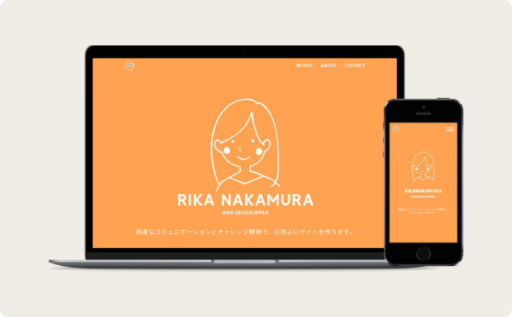
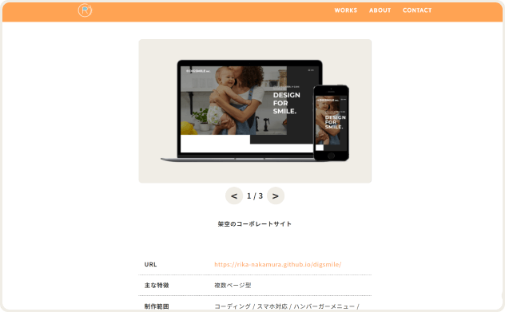

works


ポートフォリオサイト(このサイトです)
- URL
- https://rika-nakamura.github.io/digsmile/
- 主な特徴
- 複数ページ型 /ハンバーガーメニュー / スライドショー / アコーディオン / フェードイン / スムースクロール
- 制作範囲
- デザイン・コーディング・スマホ対応・WordPress対応・ロゴやアイコン作成
- 使用言語/ツール
- HTML / CSS / JavaScript / jQuery / Figma
- 制作期間
- 3週間
- 作成のポイント
-
- ・PCとスマートフォンで閲覧できるようにレスポンシブ化をしています。
- ・親しみやすさと、見やすいサイトをコンセプトにデザインを作成しました。自身のキャラクターや親しみやすさを表現するために、オレンジをベースとした配色 と丸みをおびたデザインを意識しました。
- ・SassとCSS設計を取り入れることで、管理・更新しやすいサイトを作成しました。